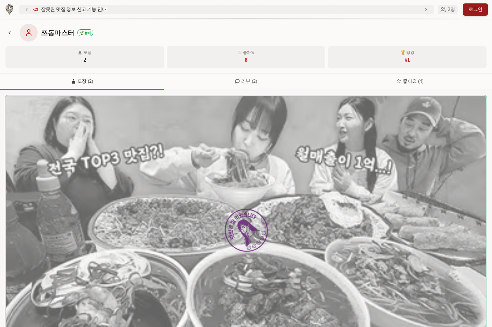
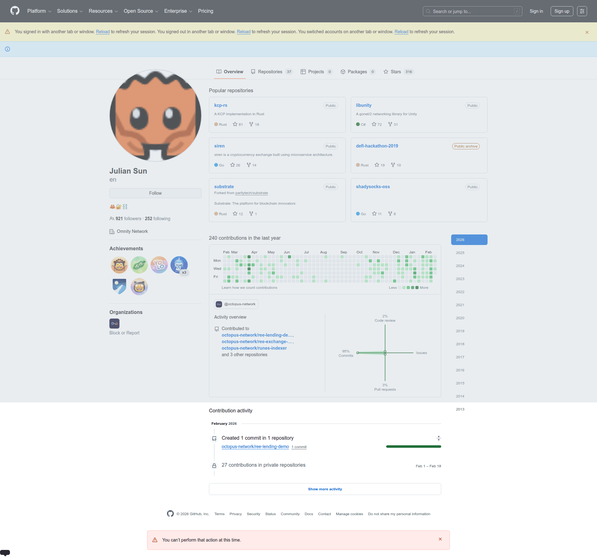
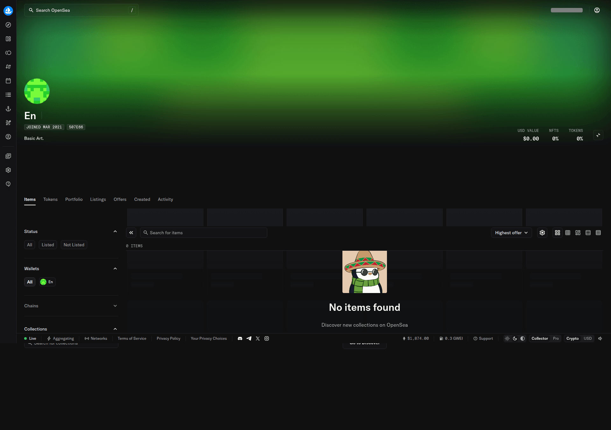
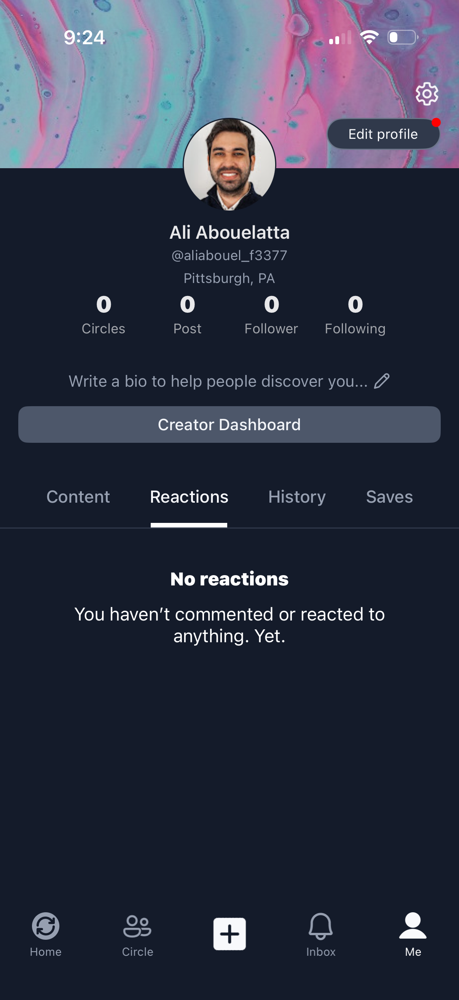
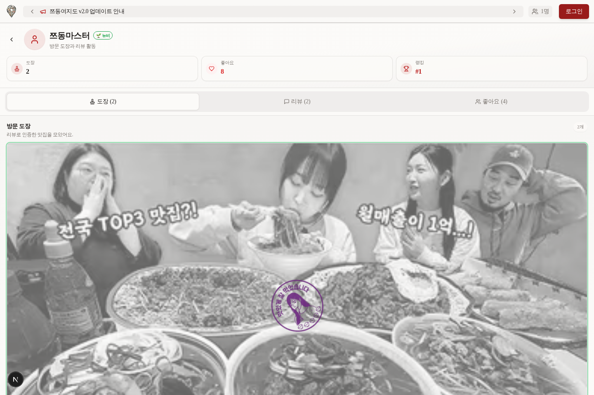
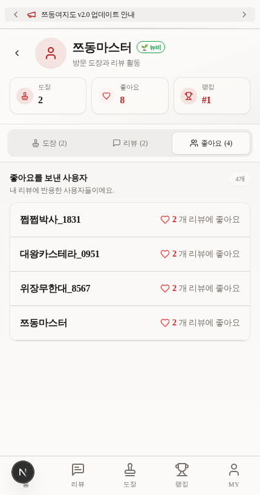
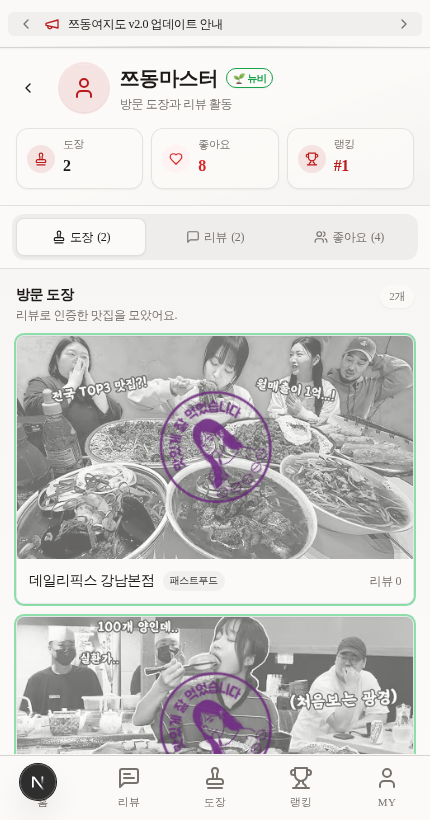

사용자 프로필 패널 UI 개선
Lazyweb 참고 패턴 기반으로 헤더, 통계 카드, 탭, 콘텐츠 섹션 위계를 개선했습니다.
현재 화면

참고 패턴



적용 내용
- 통계 영역은 1행 3열을 유지하되 아이콘 칩과 카드 테두리로 가독성을 높임.
- 탭은 underline 대신 segmented control 형태로 바꿔 클릭 가능성을 강조.
- 도장/리뷰/좋아요 콘텐츠에 섹션 헤더와 개수 배지를 추가.
StampCard size="default" stampSize="compact"는 유지해 카드형 도장 회귀를 방지.
적용 후 확인


